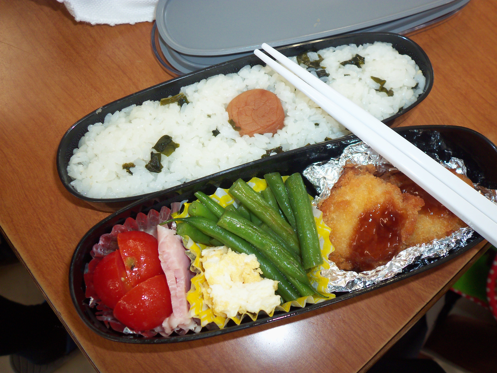
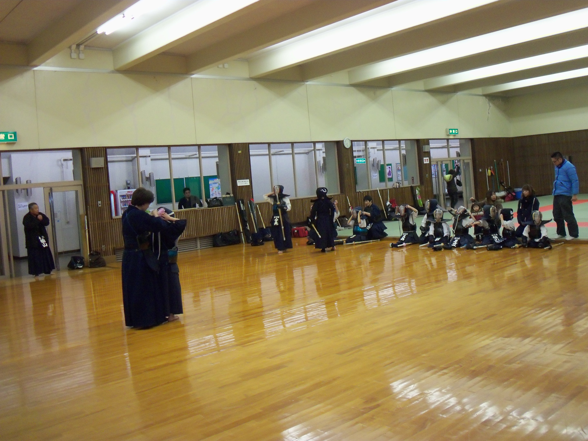
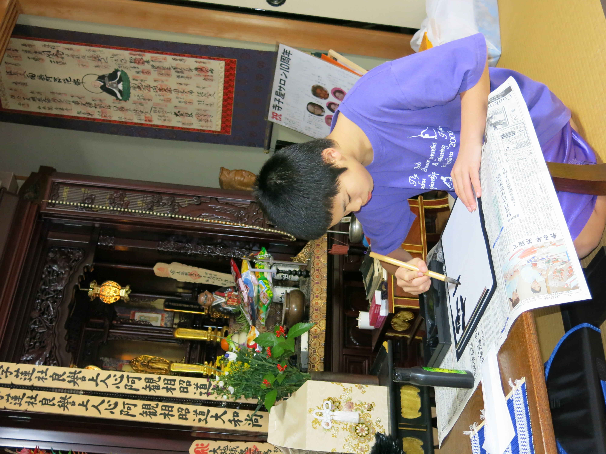

When your alarm goes off in the morning, you aren't sleeping in a bed: you're in a futon. The best way to describe it is probably "foldable matress on the floor." The bedroom you are in is pretty small, too. After a nice breakfast of rice, fish, and soup, you put on your school uniform and head to the small neighborhood train station to go to school.
Students and workers alike climb the stairs inside the larger station. You head over to get your bike that you store at the train station. Legally, only those under the age of 13 are required to wear a bike helmet, so after finishing eighth grade you never wear a bike helmet again.
This city has a population of about 150,000 and is one of the smallest cities in this part of the country. Make sure you stay on the left side of the road!
You sit down in your seat for homeroom and the class president leads the class in "gorei," which could loosely be translated as "honorific respect." "Kiritsu," she calls out. Everyone stands. "Kiyotsuke!" (At attention!) Then, "rei" at which we all bow to the front of the classroom to show respect to the teacher. At the final call, "Chakuseki" we all sit again. Homeroom begins.
Between that and our next class of the day, we are expected to clean. Not just tidying our desks and straightening our lockers, but cleaning the school as all students are expected to do so in Japan. You rotate between sweeping the classroom, mopping the hallway, and cleaning the bathroom.
After cleaning, we go back to the same room. Our homeroom teacher has already taken her stuff and gone to her next class. Pretty soon our math teacher shows up. The bell rings at the end of math class, so that teacher leaves and we wait for our history teacher to arrive. "Sorry I'm late," he apologizes, walking in just after the bell rang to start the next class. "A student had a couple of questions for me."
It's finally time for lunch! Our school has about 400 students but our cafeteria seats 30, so most people eat in their classroom. Most students have "obento" for lunch, small boxed meals often made by their mother. It's usually a serving of rice (today you have some seaweed and a pickled plum on top), some fish or meat, and vegtables. If you're luck and get a dessert, it is usually a slice or two fruit.
We push our desks back into lines and close our obento; science class is next. Classes are hard, but they're pretty bearable: unlike America, where most students go to their neighborhood school, in Japan everyone applies for high school. Usually there is a school or two in every town that accepts just about anybody. But if you don't get accepted to high school... You don't go: school in Japan is mandatory only though the end of junior high school, the end of 9th grade.
Nearby there is a high school that focuses on STEM, a high school that focuses on trade and technology, a high school that is best known for strong sports teams... This is school is well-known for two of their programs: an entrapraneur program and the cooking classes they offer. A lot of the graduates go on to get degrees in business, accounting, or open their own resturants.
After a long day of classes, you might be ready for a break! But most students participate in "bukatsu", a team or club of some sort right after school. Usually, bukatsu meets for three to four hours every weekday, and another five or six during the weekend. Many clubs meet seven days a week, and about 350 days a year (you get a week off for New Years and a week off in August). There are martial arts (kendo, judo, karate), western sports (soccer and baseball are the most popular), and artistic clubs (choir, orchestra, calligraphy). This is a close up of a student who is part of the kendo team.
Afer club, you hurry to catch the next train on your way home. After a quick dinner with your mom and siblings, you head out the door again. It's time for "jyuku," or, "cram school." Applying for high school was competetive, but applying for college is even worse. Stateside, everyone can just take the SAT/ACT, but here every school has a different entrance exam. Classes at school do help somewhat as you prepare for the entrance exams, but there is only so much that the teachers can do. Going to cram school helps because the student-to-teacher ratio is so much better. After jyuku, you hurry home and start your homework for school.
After working on it for a while, you hear your dad open the front door. He's finally home from work! He bought some ice cream on his way home from work, but mom's a little annoyed that he's come home this late. He tries to apologize, but he's a little drunk and his words are slurred: "Hun, you know that it was a work party for the boss. If I didn't go..." He trails off. Mom doesn't say anything because she knows that he's right: not going to, or not drinking at, those work parties can have long term consequences for any employee in Japan. Getting fired, or best case scenario, being social exiled and never getting promoted.
It's getting close to midnight so you shower and then get in the bathrub for a quick soak. You're the oldest kid, so you go right after your dad. After that, your younger siblings shower and then soak in the same bath water that you and your dad used. Mom goes last so she can scrub the tub afterwards. After you blow dry your hair (there is no central air, so, like most families, you only heat one room at a time--- this means that, in the winter, your bedroom gets mighty cold. Like most houses, there is minimal insulation in the walls). You pull your futon out of the closet, unfold it, and climb into the blankets, exhausted. You'll have to be out of the house by 7:15 tomorrow morning to catch that train for school!